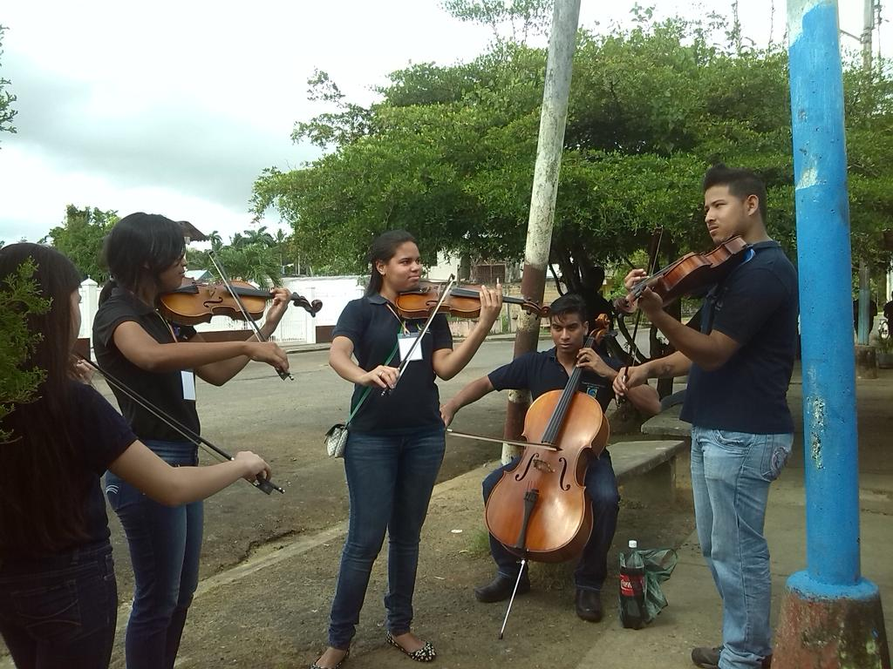
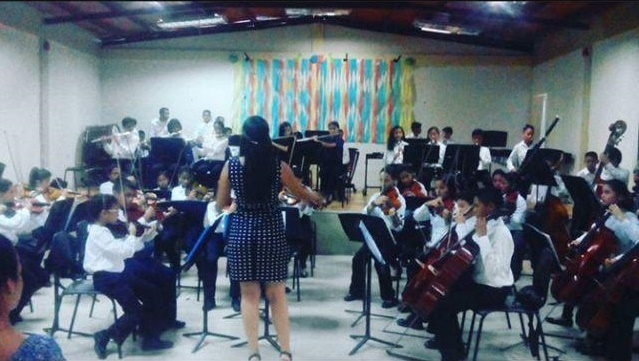
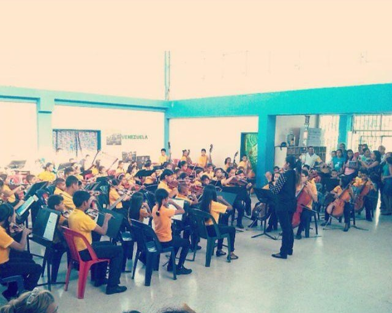
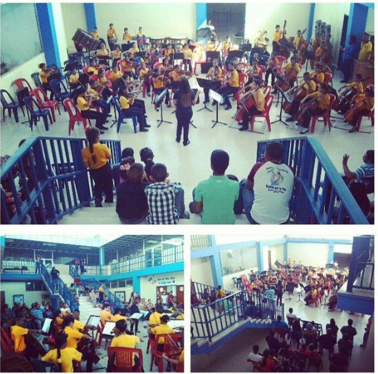

Olá!
Eu sou Yairina, nasci em Tucupita, uma cidade muito acolhedora da Venezuela, chegue aqui no Brasil no maio de 2019, morando desde então na cidade do Rio de Janeiro, o que me recebeu muito bem, ser imigrante não é facil para ninguém mas aqui tem muitas oportunidades para aproveitar. Eu saí da Venezuela com um pouco de medo, mas é normal ter medo do desconhecido, por isso foi que não desisti de chegar aqui, ter que deixar meus estudos, trabalho e família é motivo para continuar crescendo e me conheciendo melhor.
Sempre gostei de aprender coisas novas, atualizando o conhecimento constantemente, e agora estou me focando no mundo da tecnologia, fazendo o curso de Programação Full Stack da TOTI - Diversidade, estou tão grata por ter essa oportunidade de conhecimento na minha mão, adquirindo as ferramentas para me tornar um desenvolvedor no futuro.
Minha vida na musica
Comecei na música quando tinha 10 anos, para mim naquela época a música era só por diversão ou apenas um hobby. Quando comecei a ver aulas de instrumento, algo cresceu em mim, talvez tenha sido o som dos instrumentos quando os professores tocavam que me fazia perguntar, como eles poderiam fazer uma coisa dessas soar assim? Também experimentei muitas frustrações porque no início meu instrumento, o violino, não soava tão agradável quanto os outros, mas com o tempo adquiri paciência e carinho pelo estudo do instrumento, aos poucos cresci na música.
Sendo parte do Sistema de Orquestras da Venezuela , vim treinar como professor de violino, dando aulas particulares para crianças mais novas, logo tive sob minha responsabilidade uma orquestra, como diretora musical, era uma orquestra composta por 105 crianças entre 6 e 14 anos de idade, não foi fácil no començo, porém, mais uma vez eu me propus a dar o meu melhor, e dedicando minha paixão pela música para poder transmitir isso aos meus alunos.



